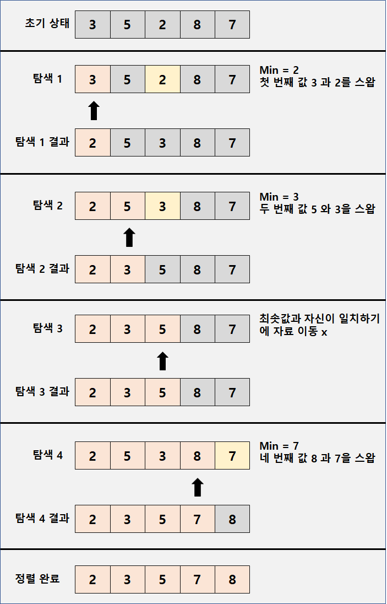

* 다음 포스팅은 개인적인 공부 내용을 기록한 것으로, 잘못된 내용이 있을 수 있습니다.
- 선택정렬[Selection Sort] 알고리즘이란?
- 선택정렬 예시
- #선택정렬 C언어 구현코드
#선택 정렬[Selection Sort] 알고리즘 이란?
선택 정렬은 기초가 되는 정렬 알고리즘 중 하나로, "가장 작은 값을 탐색하여 맨 앞의 데이터와 교환해 나가는 아이디어"를 이용한 알고리즘이다. 시간복잡도는 모든 상황에서 O(N^2)으로 , 다른 정렬 알고리즘에 비해서 매우 비효율적이다.
배열에 3 5 2 8 7 이 저장되어 있다고 가정하고 선택 정렬 알고리즘을 이용해 오름차순으로 정렬해 보도록 하자.
#선택 정렬[Selection Sort] 예시

[탐색 1] 첫 번째 인덱스 3과 나머지 자료(2번째 ~ 5번째)를 비교하여 가장 작은 값 (2)를 찾아 스왑한다.
[탐색 2] 두 번째 인덱스 5와 나머지 자료(3번째 ~ 5번째)를 비교하여 가장 작은 값 (3)을 찾아 스왑한다.
[탐색 3] 최솟값(5)이 자기 자신(5)과 일치하기에 스왑하지 않는다.
[탐색 4] 네 번째 인덱스 8과 나머지 자료 (5번째)를 비교하여 가장 작은 값(7)을 찾아 스왑한다.
#선택 정렬 C언어 구현코드
#include <stdio.h>
int arr[5] = {3, 5, 2, 8, 7};
int index,temp;
int main()
{
// 정렬 전
printf("BEFORE\n");
for (int i = 0 ; i < 5 ; ++i)
{
printf("%d ", arr[i]);
}
// Selection Sort
for (int i = 0 ; i < 5 ; ++i)
{
int min = arr[i];
for ( int j = i + 1 ; j < 5 ; ++j)
{
if (min > arr[j]){
min = arr[j];
index = j;
}
}
temp = arr[i];
arr[i] = arr[index];
arr[index] = temp;
}
// 정렬 후
printf("\nAFTER\n");
for (int i = 0 ; i < 5 ; ++i)
{
printf("%d ", arr[i]);
}
}